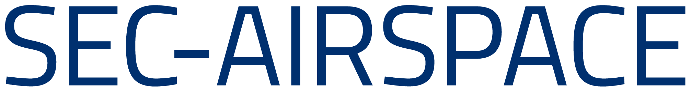
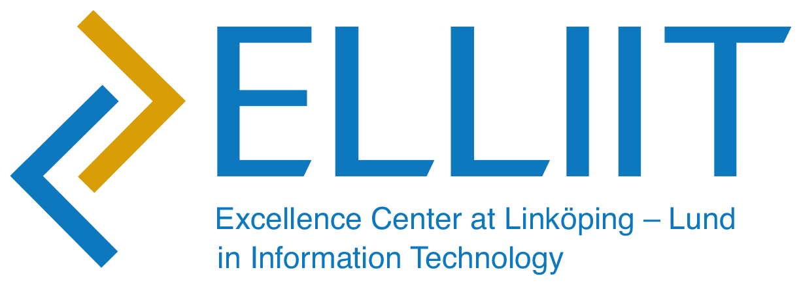
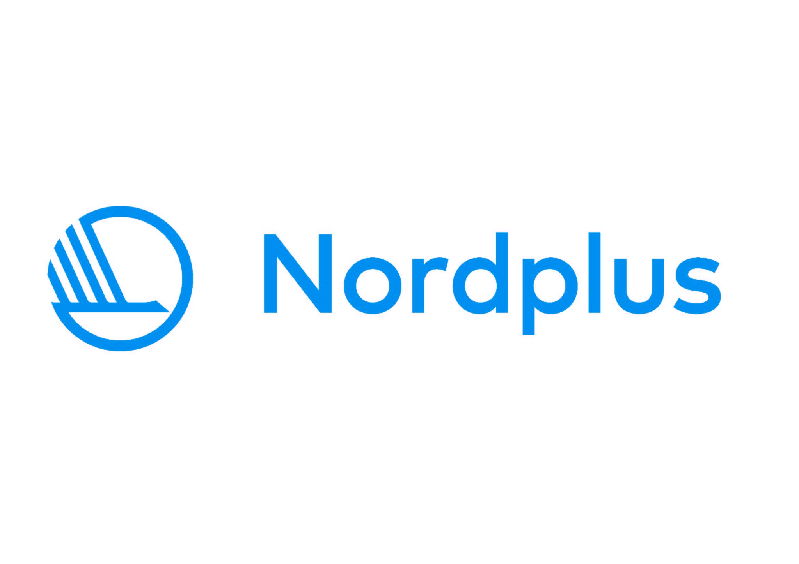

Projects & Grants
Funded research and educational initiatives
 In progress2026–2027
In progress2026–2027Visual Sensing and Decision Support for Sustainable Food Redistribution: A Swedish Pilot within the FEAST Framework
Co-Principal Investigator · Visual Digital Futures, Linköping University · SEK 0.388 M
In progress2026–2027
Visual Sensing and Decision Support for Sustainable Food Redistribution: A Swedish Pilot within the FEAST Framework
Co-Principal Investigator · Visual Digital Futures, Linköping University · SEK 0.388 M
 In progress2022–2027
In progress2022–2027Digital4Business
Curriculum Contributor and Instructor · European Commission — Digital Europe Programme · EUR 19.92 M
In progress2022–2027
Digital4Business
Curriculum Contributor and Instructor · European Commission — Digital Europe Programme · EUR 19.92 M

Completed2023–2026SEC-AIRSPACE — Cyber Security Risk Assessment in Virtualised Airspace Scenarios
Co-Principal Investigator and Task Leader · SESAR Joint Undertaking · EUR 1 M

Completed2023–2026
SEC-AIRSPACE — Cyber Security Risk Assessment in Virtualised Airspace Scenarios
Co-Principal Investigator and Task Leader · SESAR Joint Undertaking · EUR 1 M

Completed2022–2023Secure Transparent Communications in the Industrial Internet
Researcher · ELLIIT Excellence Center · —

Completed2022–2023
Secure Transparent Communications in the Industrial Internet
Researcher · ELLIIT Excellence Center · —
 In progress2026–2028
In progress2026–2028CyberResilient-Nordic
National Coordinator and WP Leader · NordForsk · NOK 2.0 M
In progress2026–2028
CyberResilient-Nordic
National Coordinator and WP Leader · NordForsk · NOK 2.0 M

In progress2026–2027Networked Hubs of Competencies for Emerging Technologies-Driven Cyber-Sustainable Engineering
National Lead · Nordplus Higher Education (NPHE-2026/10449) · EUR 0.061 M

In progress2026–2027
Networked Hubs of Competencies for Emerging Technologies-Driven Cyber-Sustainable Engineering
National Lead · Nordplus Higher Education (NPHE-2026/10449) · EUR 0.061 M
 Completed2025–2026
Completed2025–2026Capture the Flag Cybersecurity Challenge 2025
Lead Organiser · ELLIIT and supporting organisations · SEK 90,000
Completed2025–2026
Capture the Flag Cybersecurity Challenge 2025
Lead Organiser · ELLIIT and supporting organisations · SEK 90,000
Completed2025–2026Advancing the Education of Engineers Through AI for Cyber-Sustainable and Energy-Efficient Union
National Lead · Nordplus Higher Education (NPHE-2025/10355) · EUR 0.128 M
Completed2025–2026
Advancing the Education of Engineers Through AI for Cyber-Sustainable and Energy-Efficient Union
National Lead · Nordplus Higher Education (NPHE-2025/10355) · EUR 0.128 M